A Convolutional Neural Network for Inverting Observations from the EUV Snapshot Imaging Spectrograph
Roy T. Smart, Charles C. Kankelborg, and the ESIS Team
Imaging Spectroscopy
Full-disk mosaic of the Sun captured by the Interface Region Imaging Spectrograph (IRIS) (De Pontieu 2014).
Cube with (x, y, λ) axes.
Si IV 1394 A spectral line.
Each mosaic takes about 18 hours to capture.
Can we do better?
Here is an observation of the Sun by the Interface Region Imaging Spectrograph or IRIS of the Si IV 1394 A spectral line.
This type of observation is interesting since it is not simply a grayscale image, but a stack of images where each image is at a slightly different wavelength.
Throughout this talk, I’m going to call this sort of object a spatial-spectral cube, since it has two spatial axes (like a normal image) and one spectral axis.
As you probably know, displaying a 3D cube on a 2D screen is mildly challenging, so I’ve made this animated figure stepping through every slice of the cube.
The main figure is just a sum through the cube, or simply a normal intensity image of the Sun.
On the right, we have the spectrum taken from the slice under the vertical red line, on the bottom we have the slice under the horizontal red line, and in the bottom right corner is the spectral line profile at the intersection of the two red lines.
This particular spatial-spectral cube was gathered over 18 hours, by slowly rastering a slit across the solar disk, in a very similar fashion to my figure, except that the IRIS slit isn’t as tall as the Sun, so it takes several rasters across the disk to complete the mosaic.
The results are of very high quality, but we would like to be able to gather images like this with much higher cadence, 18 hours is a long time for a dynamic object such as the Sun.
In this talk we will explore a new imaging spectrograph design, ESIS, which has the ability to capture spatial-spectral cubes with higher cadence than IRIS.
Outline
Cartoon Example
ESIS design
Optical layout
Distortion
Vignetting
Convolutional Neural Networks (CNN)
ESIS Inversion CNN
Design
Training dataset
Performance
Here is an observation of the Sun by the Interface Region Imaging Spectrograph or IRIS of the Si IV 1394 A spectral line.
This type of observation is interesting since it is not simply a grayscale image, but a stack of images where each image is at a slightly different wavelength.
Throughout this talk, I’m going to call this sort of object a spatial-spectral cube, since it has two spatial axes (like a normal image) and one spectral axis.
As you probably know, displaying a 3D cube on a 2D screen is mildly challenging, so I’ve made this animated figure stepping through every slice of the cube.
The main figure is just a sum through the cube, or simply a normal intensity image of the Sun.
On the right, we have the spectrum taken from the slice under the vertical red line, on the bottom we have the slice under the horizontal red line, and in the bottom right corner is the spectral line profile at the intersection of the two red lines.
This particular spatial-spectral cube was gathered over 18 hours, by slowly rastering a slit across the solar disk, in a very similar fashion to my figure, except that the IRIS slit isn’t as tall as the Sun, so it takes several rasters across the disk to complete the mosaic.
The results are of very high quality, but we would like to be able to gather images like this with much higher cadence, 18 hours is a long time for a dynamic object such as the Sun.
In this talk we will explore a new imaging spectrograph design, ESIS, which has the ability to capture spatial-spectral cubes with higher cadence than IRIS.
Firework Example
Why are spatial-spectral cubes useful?
Consider an expanding shell in 3 dimensions (x, y, z).
All particles have the same initial velocity and random initial direction.
The particles experience drag.
Similar to explosive events on the Sun.
To help understand why measuring a spatial-spectral cube is useful, I have prepared this simulation of a firework.
The firework is a spherical shell composed of 200 points, each with the same initial velocity but a random initial direction in three dimensions.
The particles experience drag, so they all start with a high initial velocity and slow down as time progresses.
This cartoon is inspired by transition region explosive events, which are mysterious events on the Sun with extreme Doppler shifts.
Firework Example
Also suppose we can only measure a 2D projection of the firework (like observing the Sun from Earth).
Skyplane velocity can be found by tracking particles.
No line-of-sight velocity.
Let’s assume that we can only observe this firework from one vantage point, just like how we normally observe the Sun from the Earth.
I’ve drawn gray lines on the upper-left figure to show the direction of the observer, which I am defining to be in the line-of-sight direction (in this case the –x direction).
If this observer were to take an image of the firework, we would model that as a projection of the firework onto the skyplane (y-z plane).
Imaging the firework in this fashion allows us to measure the skyplane components of the particle’s velocity easily, but the line-of-sight component of the particle’s velocity is lost because the projection operation destroys information along that axis.
Firework Example
How to find line-of-sight velocity?
Use Doppler effect to relate wavelength to velocity.
Change in velocity is proportional to change in wavelength.
Need to measure a spatial-spectral cube (λ, y, z).
Fortunately, there is a common way to recover the line-of-sight velocity, but it involves measuring a lot more information!
To do this, we can take advantage of the famous Doppler effect which causes objects moving toward the observer to appear bluer, and objects moving away from the observer to appear redder.
To help demonstrate this, I’ve added new subplot in that plots the line-of-sight velocity instead of the line-of-sight position which was already plotted in the top-left subplot.
In this new representation, the firework starts out long and skinny since the particles start all grouped together with high initial velocity, and it ends short and fat since the particles spread out and slow down.
Now, the Doppler effect is a linear relationship between change in wavelength and change in velocity, so we can also interpret the line-of-sight velocity axis as the wavelength axis.
To drive this point home, I’ve colored all the particles according to their Doppler shifted wavelength: green is stationary, blue is moving towards the observer and red is moving away.
So apparently all we have to do is take many images at slightly different wavelengths and we can recover the line-of-sight velocity!
Firework Example
How to measure spatial-spectral cube?
Use diffraction grating to spread light according to wavelength.
Model grating dispersion by projecting at an angle through the spatial-spectral cube.
New problem: spatial-spectral ambiguity
Unfortunately it turns out taking many images at slightly different wavelengths isn’t feasible for the wavelength resolution necessary to measure Doppler shifts on the Sun.
Instead, we use an optical element known as a diffraction grating which disperses light according to its wavelength: redder light disperses more while bluer light disperses less.
If we image our firework example using a diffraction grating, we can actually model that as a projection at some angle through the spatial-spectral cube, where the angle is determined by the properties of the grating.
I’ve shown the projection direction of a particular grating by using the gray lines in the top center subplot.
In the bottom-right subplot we have the image associated with this new projection through the cube.
You may notice that the colors in the bottom-right subplot are not exactly in order.
This is because now a particle’s position on the detector is influenced by both position and wavelength in the cube.
If we see a particle on the right side of the detector it could be either that the particle is indeed on the right side of the field-of-view, or the particle could be near the center of the field-of-view but extremely redshifted.
I will call this problem spatial-spectral ambiguity, and it is a common problem when imaging scenes using diffraction gratings.
Firework Example
How to solve spatial-spectral ambiguity?
Measure one slice at a time and raster across the scene.
Known as a slit spectrograph
This is the design used by IRIS.
The traditional way of solving the spatial-spectral ambiguity problem is to use a slit to restrict the field-of-view along the dispersion direction of the grating.
This way, if a particle is on the right side of the detector, we know it’s redshifted because the slit didn’t allow light from the right side of the field-of-view to reach the detector.
However, the obvious drawback with this method is that we have to raster the slit across the spatial-spectral cube to capture the whole event, and we presumably missed parts of the event since the slit can only observe a small portion at a time.
This type of instrument is known simply as a slit imaging spectrograph, and this is the type of design used by IRIS, which captured the example spatial-spectral cube we were looking at earlier.
Firework Example
Is there a faster way?
Use multiple slitless spectrographs to observe the scene.
Each has a different dispersion angle.
Use computed tomography (CT) to calculate cube.
Known as a CT imaging spectrograph (Okamoto 1991).
So, is there a faster way to do this that doesn’t involve rastering?
One thing we can do to capture more information about the cube is to observe it with more spectrographs.
If we arrange several spectrographs (without slits) such that each has a different dispersion direction, each one will see a different view through the spatial-spectral cube.
In the figure above, I’ve added another projection direction so that we have three views through the cube along the bottom of the figure.
The question is, is there a way to combine the three images to calculate the spatial-spectral cube?
It turns out that there is already a well-established formalism about how to solve this problem, known as computed tomography (CT).
For this reason, this type of spectrograph is known as a CT imaging spectrograph.
EUV Snapshot Imaging Spectrograph (ESIS)
Computed tomography (CT) imaging spectrograph
Collaboration between Montana State University and Marshall Space Flight Center.
Based on the Multi-order Solar EUV Spectrograph (MOSES).
Sounding rocket platform.
Launched from White Sands Missile Range on September 30, 2019.
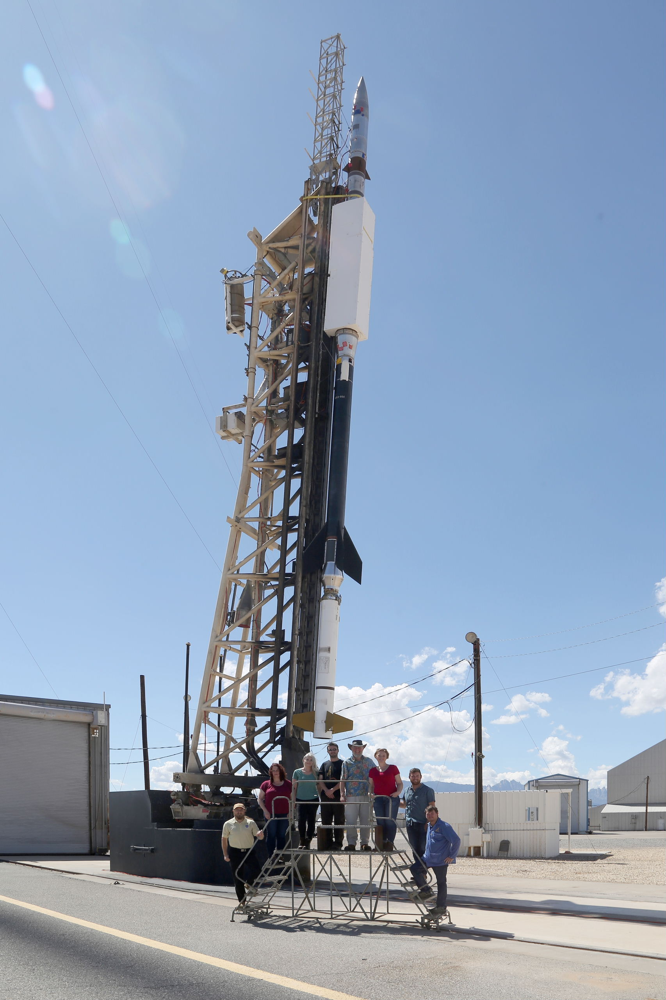
Now that we’re familiar with the concept, we finally can introduce our implementation of a CT imaging spectrograph, the EUV Snapshot Imaging Spectrograph (ESIS), which is a collaboration between Montana State University and Marshall Space Flight Center.
This instrument is the successor of an earlier CT imaging spectrograph, the Multi-order Solar EUV Spectrograph (MOSES) which has flown before in 2006 and 2015.
Both instruments are now part of the same sounding rocket payload that recently launched in September 2019.
ESIS images two strong EUV spectral lines: O V 630A and He I 584A, but many other weaker lines are also present in the passband.
ESIS Optical Layout
Modified Gregorian optical design
Parabolic primary mirror
Octagonal field stop
4x Spherical VLS gratings
4x E2V rear-illuminated CCDs
0.77 arcsec / pix
36 mA / pix (18 km / s / pix)
11 arcmin FOV
556 – 666 Angstrom range
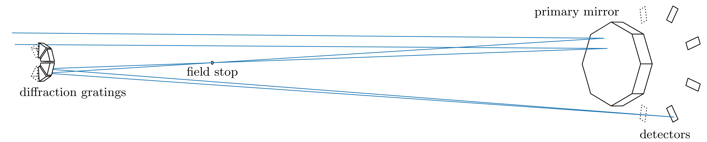
ESIS Spectral Range
Sparse area of solar spectrum
Reasonable temperature coverage of TR
O V 630 A (250,000 K)
He I 584 A (25,000 K)
Mg X 610 A (1.3 MK)
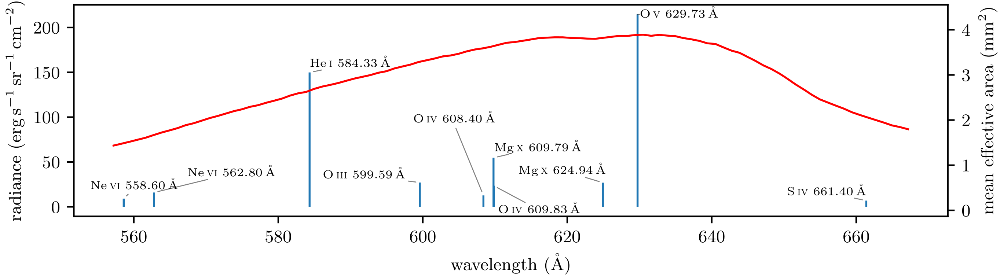
ESIS Spectral Range
Multiple copies of the field stop appear to be imaged by the detectors, one for each spectral line.
The images of the field stop overlap one another
This type of observation is sometimes called an “Overlappogram”
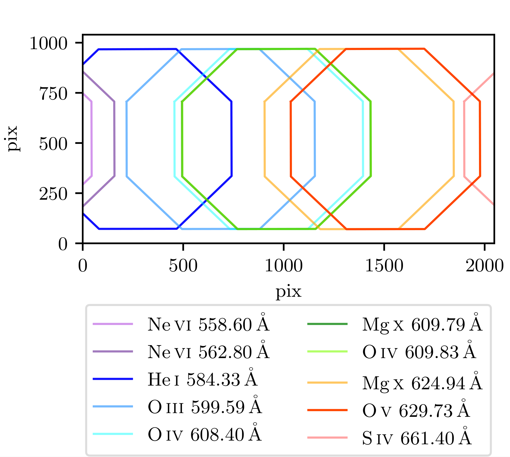
Detector Orientation
4 channels, each with a different dispersion direction
Oriented in multiples of 45 degrees


Courtesy: Charles Kankelborg
ESIS Distortion
Focal plane is tilted since detectors cannot be cospatial with field stop
Tilted focal plane leads to stretching of the image parallel to the dispersion axis.
Images from each channel cannot be compared directly.
Distortion might not be separable from inversion.

ESIS Distortion Model
Tested linear and quadratic distortion models
Quadratic model is needed for subpixel accuracy

ESIS Vignetting
Original design had no vignetting
Removed mask to allow approx. 2x more throughput
Modeled by linear 2D polynomial
Needs to be taken into account during inversion

ESIS Example
Select region of spatial-spectral cube.
To help understand the images that ESIS captures, I’d like to return to my original example, but zoomed in on the active region near the center so the people in the back can see what I’m talking about.
ESIS Example
Small active region.
Lots of large Doppler widths and shifts
I’ve chosen this small active region because its reasonably bright and it has plenty of explosive events which are easily seen in ESIS data.
So as the video continues you can see all these explosive events popping off as the slit moves over them.
ESIS Example
Compare a normal image with the images captured by ESIS.
The image is blurred in different directions for each channel.
Here I’ve plotted four simulated ESIS images compared to the intensity image of the active region.
We can see that each image is blurred in a different direction corresponding to the red line I’ve plotted.
These images are very similar to real ESIS observations, but they contain only one spectral line instead of the several spectral lines in the ESIS passband.
Inversion
Recover the original cube (with many spectral bins) from only 4 images.
Ill-posed problem.
How to solve?
As previously discussed, our goal with these four images is to recover the original spatial-spectral cube.
However, there’s an obvious problem: we only have four images, but for this particular cube we need to reconstruct 20 spectral bins.
We simply have more unknowns than we have equations, this is known as an ill-posed inversion problem.
How can we ever hope to solve this problem?
Computed Tomography
Used in medicine to reconstruct 3D models of organs and other tissues from many x-ray images taken at different angles.
Algorithms used in medicine aren’t necessarily useful since we only have 4 projections instead of hundreds.
For insight, we could look to the medical field which has successfully been using computed tomography to reconstruct 3D models of organs and other tissues, in fact many of us in this room have probably had a CT scan or MRI.
However, the classic filtered backprojection algorithm, which I’ve shown on the right, isn’t very useful for our problem since medical CT scans often contain images taken from hundreds of different angles, instead of the four available with ESIS.
We can see this by looking at the figure I’ve included, after four frames the reconstruction simply isn’t very good, we need to wait until some more frames have elapsed to understand what we’re looking at.
Motivation for Convolutional Neural Networks (CNNs)
How to make statistical model of the Sun?
Inspired by pix2pix (Isola 2016).
Can we use a similar procedure to reconstruct the spatial-spectral cube from limited information?
Since there is not enough information in the ESIS data to solve the problem, we need to look for more information elsewhere.
One thing we could consider doing is to use other solar observations and the ESIS forward model to make a sort of dictionary, where we catalog every event that could ever happen in the spatial-spectral cube and its corresponding signal on the ESIS detector.
Then we could simply use this dictionary to go backwards: given an event in an ESIS observation we could find the corresponding spatial-spectral cube.
Obviously, literally doing this is impossible, but this thought experiment made me realize that a statistical model of the Sun is needed to fully constrain the ESIS inversion problem.
What made me realize that CNNs could possibly be the right approach for a statistical inversion algorithm was the pix2pix project published by Isola in 2016.
On the right we can see an example of the pix2pix project in action, a very crude drawing of a face is transformed into a quasi-realistic face by a CNN.
When I saw this, I was very excited because it did exactly what I wanted: given a little information about the scene, the CNN was able to transform it into something that looked realistic, since it has learned what real faces look like.
Convolutional Neural Networks
Revolutionary computer vision algorithm
Handwriting recognition
Image classification
Board games
Learns filters (kernels) that can be convolved with the input to approximate the output.
Filters are learned during training
Usually several convolutional layers.
Convolutional neural networks have been revolutionary in many other previously unsolved computational problems, including handwriting recognition, image classification and board games such as Go.
It works by learning the filters (or in physics nomenclature kernels) that need to be convolved with the input to reproduce the output.
The filters are learned through a process called training, where the network is presented with many input/output pairs and given feedback about how well it reproduces the output.
On the right we can see an example of a 2D convolution operation, the blue input image is being convolved with the gray filter to yield the green output.
Practical CNNs have several convolutional layers that are applied successively to the input image.
ESIS CNN Inversion Algorithm
Use IRIS full-disk mosaics as training set.
Different wavelength
Spikes in IRIS dataset are an extreme source of noise.
Mask SAA regions
Local median despiking
Simulate ESIS images using forward model.
Basic forward model
Shot noise
Gather training dataset
Despike training datset
Calculate simulated ESIS images
Apply CNN to simulated images
Compare CNN output to IRIS images
Adjust parameters of CNN
Armed with some basic knowledge about CNNs, we can outline how they can be applied to the ESIS inversion problem.
The most difficult part of this algorithm is making the training dataset, since the CNN is only as good as the data it’s trained on.
As you may have heard, CNNs and other machine learning algorithms have come under fire recently for racial and other biases because they weren’t trained on diverse enough datasets.
Using the IRIS full-disk mosaics in this case is a great advantage because the entire disk of the Sun is sampled evenly.
If we were to use normal IRIS observations, we may have issues since there may be more observations at disk center, for example, which may result in poorer performance at the edge of the disk.
A general problem with using IRIS observations as a training dataset is the presence of spikes caused by cosmic ray hits.
This problem is the worst in an area known as the South Atlantic Anamoly (SAA), an area where the radiation belts dip lower than normal, causing a huge number of spikes in this region.
To deal with the spikes, I’ve completely masked off the areas within the SAA, and I’ve applied a local median despiking algorithm to the remainder of the data.
Once the IRIS full-disk mosaics have been despiked, we can apply the ESIS forward model and compute simulated ESIS images.
For this talk, I am using a simple version of the ESIS forward model that only includes dispersion and photon shot noise.
We then apply the CNN to the simulated images and compare the output to the original IRIS full-disk mosaic.
Based on this comparison, the weights of the CNN are adjusted, and we repeat until we’ve reached an acceptable convergence criterion.
ESIS Inversion CNN
Encoder-decoder architecture similar to Badrinarayanan 2015
Encoder applies successive convolutions + downsampling
Decoder applies successive upsampling + convolutions
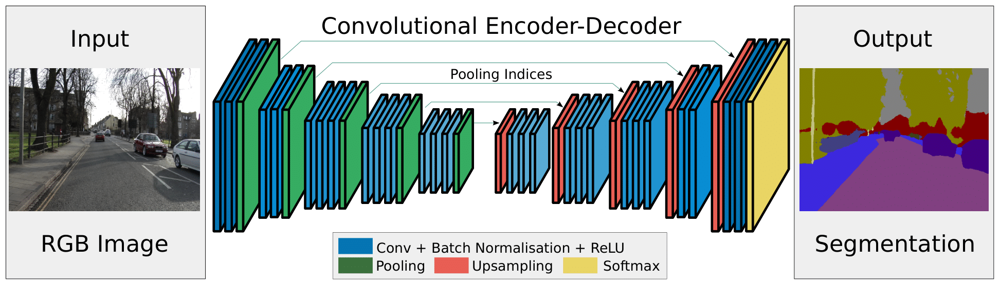
Another problem is that CNNs come in many different shapes and sizes, so how do we choose the appropriate network for the problem?
I have no idea, but the network I settled on is similar to the encoder-decoder architecture proposed by Badrinarayanan 2015.
In this design, the network is split into two parts: the encoder and decoder.
The encoder applies successive convolutions and downsampling, while the decoder applies successive convolutions and upsampling.
I chose this architecture because it is designed to output an image that is the same size as the input, which is desirable for ESIS inversions since the output cube needs to have the same spatial dimensions as the input images.
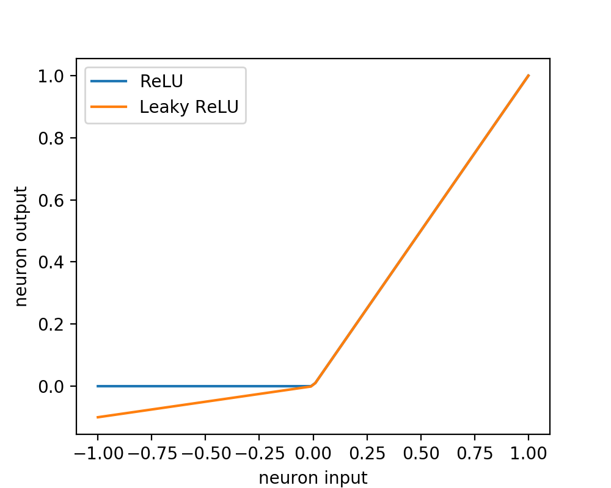
ESIS Inversion CNN
2x encoder layers
16 or 32 filters per layer
11 x 11 x 11 pixels per filter
2 x 2 x 2 downsampling
Leaky ReLU activation
10% dropout
2x decoder layers
32 or 16 filters per layer
11 x 11 x 11 pixels per filter
2 x 2 x 2 upsampling
Leaky ReLU activation
10% dropout
Specifically, the network I trained had two encoder layers and two decoder layers, each with 16 or 32 filters per layer and 11 x 11 x 11 pixels per filter.
The encoder has 2 x 2 x 2 downsampling per layer, while the decoder has 2 x 2 x 2 upsampling per layer.
One thing I haven’t mentioned yet is the activation function, which is really important because it provides nonlinearity to the network.
A basic activation function is the rectified linear unit (ReLU), plotted in blue.
In practice the ReLU doesn’t work very well since it has zero gradient for x < 0, this is fixed by a so-called leaky ReLU, plotted in orange, where the region x < 0 has some small slope.
Another detail that needs to be included for this to work is some form of regularization to prevent overfitting.
In this network we’ve used a regularization procedure called dropout which randomly disables 10% of the pixels in each filter at each training step.
This prevents the network from becoming overly reliant on a single filter.
Training Dataset
55 IRIS full-disk mosaics from 2013 to 2018 were selected.
Newer full-disk mosaics had poor SNR.
Split evenly into training and validation datasets.
Calculate network weights using training dataset
Test network using validation dataset.
Here we have a movie showing all of the IRIS full-disk mosaics included in the training dataset.
I’ve selected 55 IRIS full-disk mosaics taken between 2013 and 2018 to train this network.
I would’ve selected more, but the signal to noise ratio is too low in the latest mosaics.
I split these 55 mosaics into two sets: one set to be used to train the network and another set used to validate the network.
Using a validation dataset is important because we need an independent dataset to correctly assess the performance of the network.
If we tested it on data its seen before, it wouldn’t be a very fair test.
Training
Each epoch represents one pass through the training dataset.
Trained for 40 epochs.
20 minutes per epoch
1 Mpix / second
Nvidia GTX 980, 4GB RAM
12 hours total training time
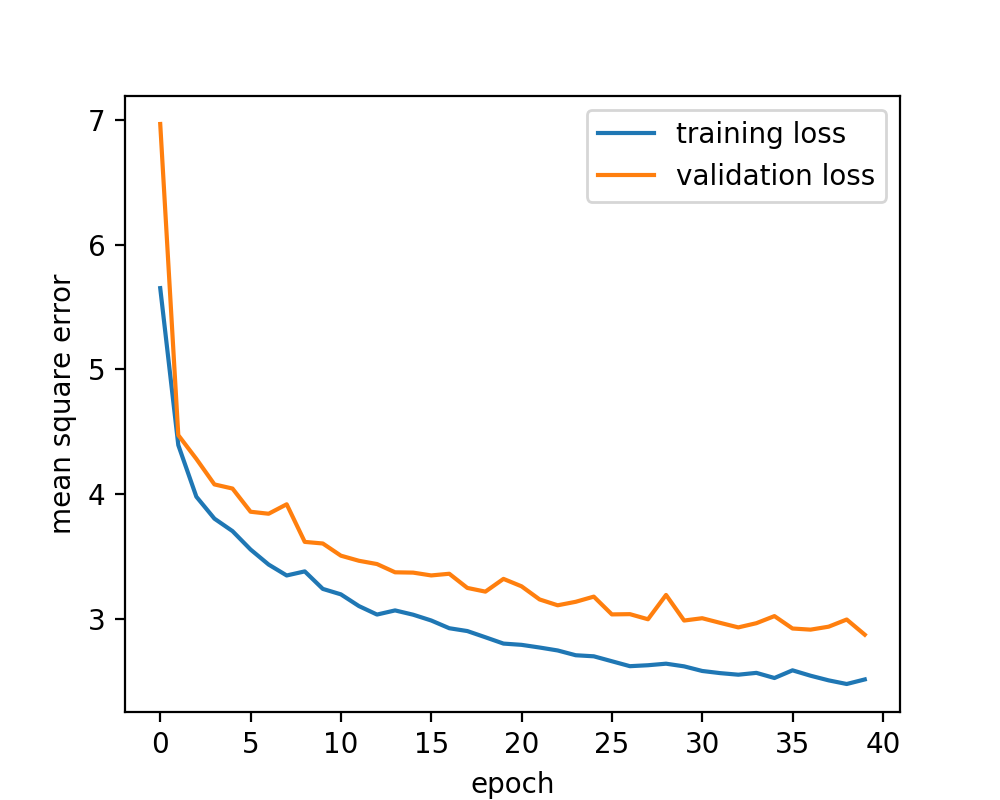
Here is a plot showing the convergence of the network as a function of epoch.
An epoch is defined as one pass through the training dataset, so this network saw all the images in the dataset 40 times.
Each epoch took approximately 20 minutes to complete on a Nvidia GTX 980.
This corresponds to about 12 hours of training time for this network.
Results
How well did we recover the initial spatial-spectral cube?
Good recovery of explosive events.
Unwanted ringing and other artifacts.
With the training of the CNN complete, we can inspect the results to see how well it did.
Here is a plot of the same example spatial-spectral cube recovered by our CNN inversion algorithm.
You can see that the network generally recovered the intensity correctly, although there is a noticeable loss in resolution and ringing around the most intense events.
We can also see that the spectrum looks plausible, it seemed to recover things that look like explosive events.
Spatial Reconstruction
Noticeable reduction in blurring compared to input image.
Here, we are blinking between one of the input images and the recovered intensity
There is definitely a noticeable reduction in blurring.
Spatial Reconstruction
Blurrier than the true Sun.
Some objects are not visible in the reconstruction.
Here is a similar image that blinks between the original intensity and the recovered intensity.
We can definitely see now that there is a noticeable blurring between the original image and the recovered image.
Also, we can find objects in the original that are not present in the recovered image.
Spectral Reconstruction
The reconstruction is also slightly blurred in the spectral dimension.
Doppler shift is underestimated.
Doppler width is underestimated.
We can also blink between the original spectra and the recovered spectra.
These are four slices through the same cube, at indices 500, 510, 520, and 530.
The reconstruction generally looks pretty good, but we can notice that the images look slightly blurrier, resulting in underestimated doppler shifts and widths.
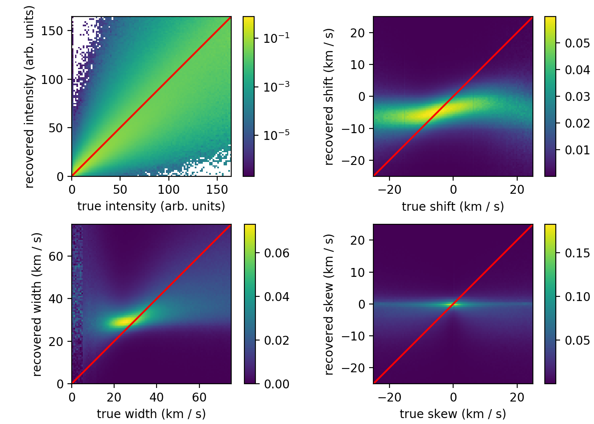
Statistical Performance
2D histogram plotting a true moment of the spectral line profile vs. a reconstructed moment.
Shift underestimated.
Small widths overestimated.
Large widths underestimated.
Finally, we can also quantify the performance of the network using these 2D histograms.
What I’ve done is calculate several moments of the spectral line profile, intensity, shift, width and skew, for both the original cube and the recovered cube.
By plotting the true value of the moment vs. the reconstructed value, we can see the network’s performance as a function of the original moment.
If the reconstruction were perfect, all of the points would fall under the red lines.
By comparing with the red lines, we can see that the intensity is reasonably well predicted, the shift is underestimated, the width is both over and underestimated, and the skew is hardly recovered at all.
MOSES Inversion CNN
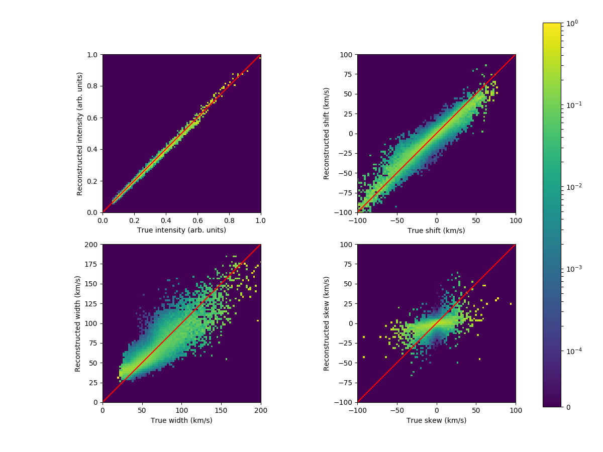
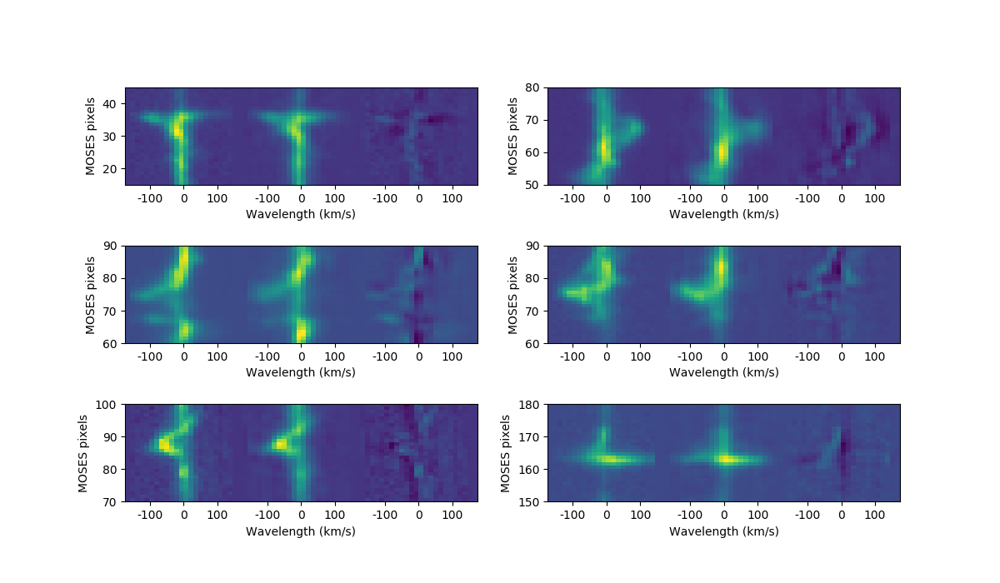
Conclusion
CNNs are a promising approach to inverting ESIS data.
20 seconds to invert 1000 x 1000 x 20 spatial-spectral cube.
Current implementation has ringing and other artifacts.
Underestimates Doppler shift
Under and overestimates Doppler width.
In conclusion, I think CNNs are a promising approach to inverting ESIS data.
The current network can invert a 1000 x 1000 x 20 cube in 20 seconds, which is nearly fast enough for real-time processing of ESIS images.
Unfortunately the current network underestimates Doppler shift, and both over and underestimates the Doppler width.
However I really think with a larger network and more training time this method could really shine.
Future Improvements
Larger network, better GPU, more training time.
Recover multiple spectral lines
Use IRIS F2: Equatorial scan study
Add more aspects of the ESIS forward model
Vignetting
Detector noise
Apply to ESIS data!
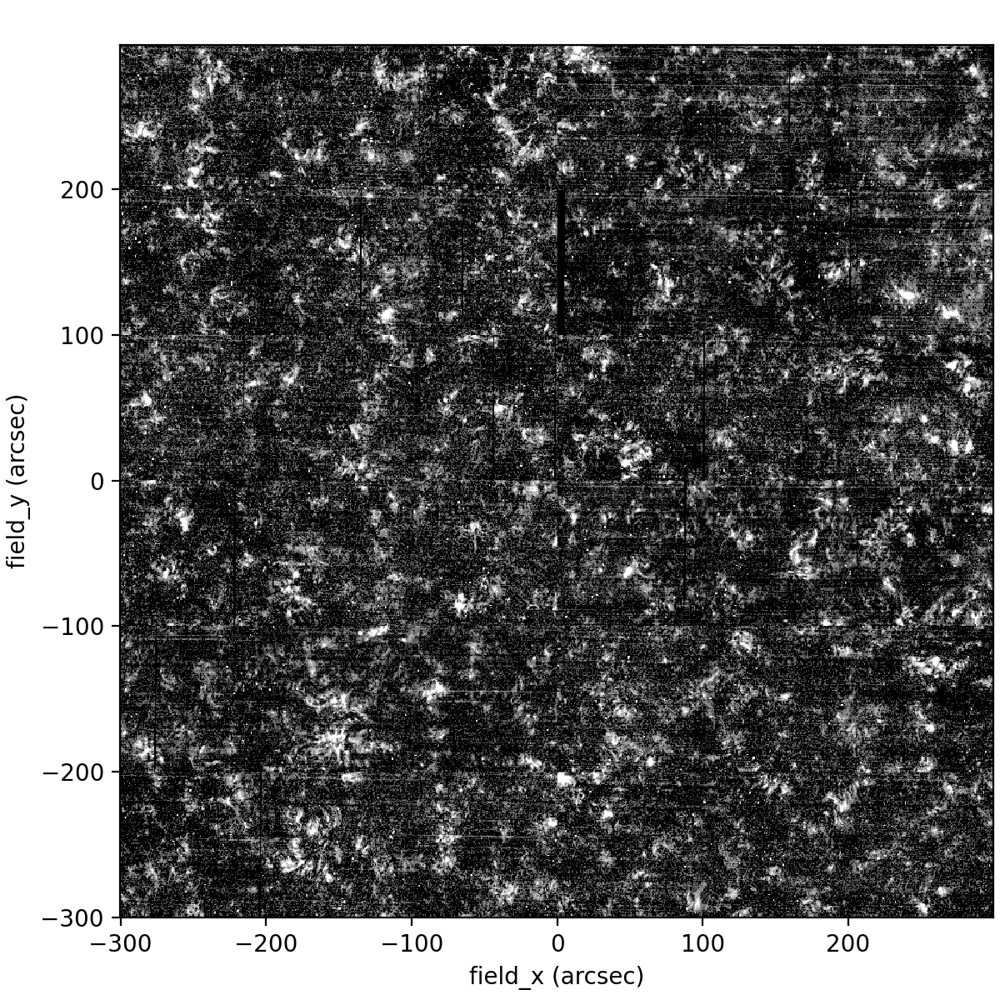
There’s lots of things I’d like to do in the future.
Perhaps the easiest is to try and run this network on a better GPU and train for longer.
Also, the IRIS passband is not the same as ESIS, it would be better if we could train on the correct passband, perhaps we can use CDS?
Another thing I’d like to do is extend the network to include another spectral line.
Next, I need to improve the ESIS forward model and include the effects such as distortion, vignetting and the point-spread function.
Acknowledgements
NASA Heliophysics Technology and Instrument Development for Science, #NNX14AK71G
NASA Earth and Space Science Fellowship, #80NSSC17K0524

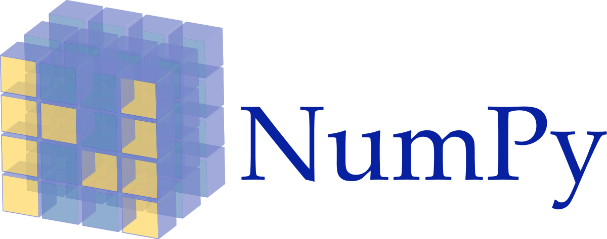
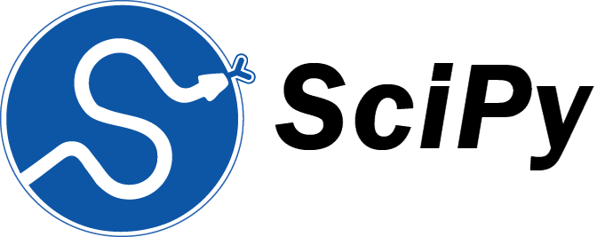

This work is supported by these NASA grants.
I’d